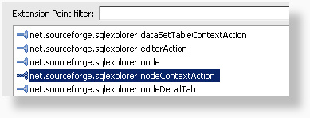
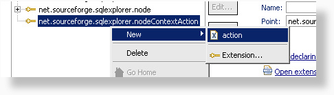
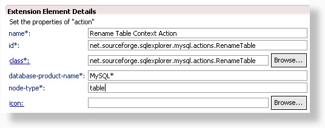
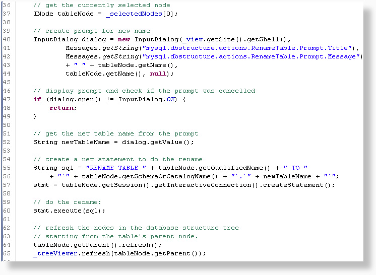
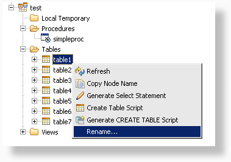
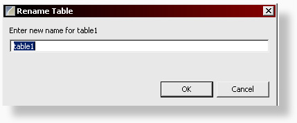
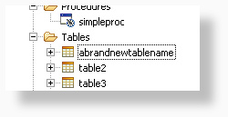

Creating new Database Structure Context Actions
In this tutorial we will be extending the net.sourceforge.sqlexplorer.nodeContextAction extension point to add a new context action (also known as right-click menu option) for table nodes in the Database Structure tree. Let's create a 'Rename Table' feature for a MySQL table.
As you probably remember from the previous tutorials, the first step is to add the extension point on the extensions tab of the fragment.xml.

Next, we create a new action by right clicking the extension point and adding a new action.

The details for the extension point are very similar to the previous extension points. The only new option we see here is the node-type field. Using this field, we can select for which node types our action will be available. For this example we will use 'table' as the node type. It's possible to target multiple node types, by entering a comma separated list of types in this field.

After you've generated the Java class, there are only 2 methods that we need to implement:
public String getText(): This method should return the text for our new action that is displayed in the context menu.
public void run(): This method is executed when the action is run by the user.
For the sake of brevity, only part of the code for the run method is shown below. The full source is available here. In the mean time, let's have a look at some of the more interesting lines.
Line 37: _selectedNodes is a protected attribute that contains an array of selected nodes in the database structure view.
Line 40: _view is a protected attribute that contains a reference to the DatabaseStructureView. You can use this to get to many things, including a shell.
Line 40-52: Standard SWT dialogs are used to prompt for a new table name.
Line 57: Starting from the selected node, we can retrieve a session and it's corresponding SQLConnection. Actions should always use the interactive connection and never the background connection, which is reserved for executing statements in a background thread.
Line 64: Because our action will change the name of the current node, we'll need to force the tables' parent node to reload it's child nodes.
Line 65: _treeViewer is a protected attribute that contains the SWT TreeViewer widget. Here we tell it to refresh the widget UI starting from the tables' parent node.

Now we are ready to test our new action. When we run our application, we see the new option available in the context menu.

After selecting the rename option, a dialog appears. Here we can enter a new table name.

The table has just been renamed to abrandnewtablename. Another new feature succesfully implemented!
